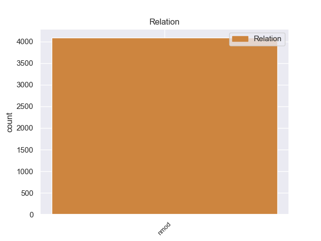
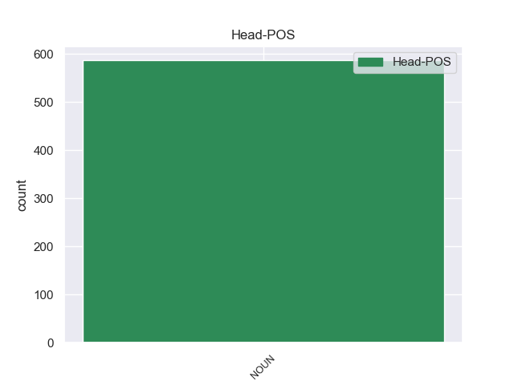
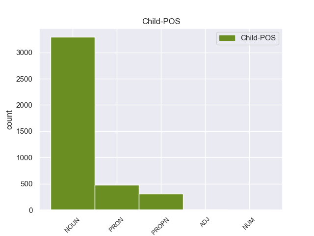

Distribution of features within this leaf



Agreement Rules sorted by frequency.
- When the dependent token is the determiner(det) of the head token, and the head token is NOUN and the dependent token is DET.
1 Σ _ _ _ _ 0 _ _ _
2 την _ _ _ _ 0 _ _ _
3 παρούσα _ _ _ _ 0 _ _ _
4 μορφή _ _ _ _ 0 _ _ _
5 της _ _ _ _ 0 _ _ _
6 , _ _ _ _ 0 _ _ _
7 η _ _ _ _ 0 _ _ _
8 αίτηση _ _ _ _ 0 _ _ _
9 άρσης _ _ _ _ 0 _ _ _
10 της ο DET _ Case=Gen|Definite=Def|Gender=Fem|Number=Sing|PronType=Art 11 det _ _
11 ασυλίας ασυλίας NOUN _ Case=Gen|Gender=Fem|Number=Sing 0 _ _ _
12 παρουσιάζεται _ _ _ _ 0 _ _ _
13 απαράδεκτα _ _ _ _ 0 _ _ _
14 ασαφής _ _ _ _ 0 _ _ _
15 . _ _ _ _ 0 _ _ _
1 Τα _ _ _ _ 0 _ _ _
2 Σύβοτα _ _ _ _ 0 _ _ _
3 είναι _ _ _ _ 0 _ _ _
4 ένας _ _ _ _ 0 _ _ _
5 παραθαλάσσιος παραθαλάσσιος ADJ _ Case=Acc|Gender=Fem|Number=Sing 10 amod _ _
6 οικισμός _ _ _ _ 0 _ _ _
7 σ _ _ _ _ 0 _ _ _
8 το _ _ _ _ 0 _ _ _
9 νότιο _ _ _ _ 0 _ _ _
10 άκρο ο NOUN _ Case=Acc|Gender=Fem|Number=Sing 0 _ _ _
11 του _ _ _ _ 0 _ _ _
12 Ν. _ _ _ _ 0 _ _ _
13 Θεσπρωτίας _ _ _ _ 0 _ _ _
14 χτισμένα _ _ _ _ 0 _ _ _
15 σε _ _ _ _ 0 _ _ _
16 έναν _ _ _ _ 0 _ _ _
17 μικρό _ _ _ _ 0 _ _ _
18 , _ _ _ _ 0 _ _ _
19 κλειστό _ _ _ _ 0 _ _ _
20 κόλπο _ _ _ _ 0 _ _ _
21 . _ _ _ _ 0 _ _ _
1 Τόσο _ _ _ _ 0 _ _ _
2 το _ _ _ _ 0 _ _ _
3 ζήτημα _ _ _ _ 0 _ _ _
4 της _ _ _ _ 0 _ _ _
5 ασυλίας _ _ _ _ 0 _ _ _
6 όσο _ _ _ _ 0 _ _ _
7 και _ _ _ _ 0 _ _ _
8 η _ _ _ _ 0 _ _ _
9 αίτηση _ _ _ _ 0 _ _ _
10 για _ _ _ _ 0 _ _ _
11 άρση _ _ _ _ 0 _ _ _
12 της _ _ _ _ 0 _ _ _
13 έχουν _ _ _ _ 0 _ _ _
14 σχέση _ _ _ _ 0 _ _ _
15 μόνο _ _ _ _ 0 _ _ _
16 με _ _ _ _ 0 _ _ _
17 το _ _ _ _ 0 _ _ _
18 εάν _ _ _ _ 0 _ _ _
19 το _ _ _ _ 0 _ _ _
20 Δικαστήριο _ _ _ _ 0 _ _ _
21 μπορεί _ _ _ _ 0 _ _ _
22 να _ _ _ _ 0 _ _ _
23 εκδώσει _ _ _ _ 0 _ _ _
24 δεσμευτικά _ _ _ _ 0 _ _ _
25 βουλεύματα _ _ _ _ 0 _ _ _
26 για _ _ _ _ 0 _ _ _
27 τον _ _ _ _ 0 _ _ _
28 περιορισμό _ _ _ _ 0 _ _ _
29 της _ _ _ _ 0 _ _ _
30 ελεύθερης _ _ _ _ 0 _ _ _
31 μετακίνησης _ _ _ _ 0 _ _ _
32 των _ _ _ _ 0 _ _ _
33 βουλευτών _ _ _ _ 0 _ _ _
34 του _ _ _ _ 0 _ _ _
35 Ευρωπαϊκού _ _ _ _ 0 _ _ _
36 Κοινοβουλίου κοινοβουλίου DET _ Case=Gen|Gender=Fem|Number=Sing 39 nmod _ _
37 ή _ _ _ _ 0 _ _ _
38 την _ _ _ _ 0 _ _ _
39 ελευθερία ελευθερία NOUN _ Case=Acc|Gender=Fem|Number=Sing 0 _ _ _
40 τους _ _ _ _ 0 _ _ _
41 να _ _ _ _ 0 _ _ _
42 έρχονται _ _ _ _ 0 _ _ _
43 σε _ _ _ _ 0 _ _ _
44 επικοινωνία _ _ _ _ 0 _ _ _
45 με _ _ _ _ 0 _ _ _
46 άλλα _ _ _ _ 0 _ _ _
47 πρόσωπα _ _ _ _ 0 _ _ _
48 . _ _ _ _ 0 _ _ _
1 Τόσο _ _ _ _ 0 _ _ _
2 το _ _ _ _ 0 _ _ _
3 ζήτημα _ _ _ _ 0 _ _ _
4 της _ _ _ _ 0 _ _ _
5 ασυλίας _ _ _ _ 0 _ _ _
6 όσο _ _ _ _ 0 _ _ _
7 και _ _ _ _ 0 _ _ _
8 η _ _ _ _ 0 _ _ _
9 αίτηση _ _ _ _ 0 _ _ _
10 για _ _ _ _ 0 _ _ _
11 άρση _ _ _ _ 0 _ _ _
12 της _ _ _ _ 0 _ _ _
13 έχουν _ _ _ _ 0 _ _ _
14 σχέση _ _ _ _ 0 _ _ _
15 μόνο _ _ _ _ 0 _ _ _
16 με _ _ _ _ 0 _ _ _
17 το _ _ _ _ 0 _ _ _
18 εάν _ _ _ _ 0 _ _ _
19 το _ _ _ _ 0 _ _ _
20 Δικαστήριο _ _ _ _ 0 _ _ _
21 μπορεί _ _ _ _ 0 _ _ _
22 να _ _ _ _ 0 _ _ _
23 εκδώσει _ _ _ _ 0 _ _ _
24 δεσμευτικά _ _ _ _ 0 _ _ _
25 βουλεύματα _ _ _ _ 0 _ _ _
26 για _ _ _ _ 0 _ _ _
27 τον _ _ _ _ 0 _ _ _
28 περιορισμό _ _ _ _ 0 _ _ _
29 της _ _ _ _ 0 _ _ _
30 ελεύθερης _ _ _ _ 0 _ _ _
31 μετακίνησης _ _ _ _ 0 _ _ _
32 των _ _ _ _ 0 _ _ _
33 βουλευτών _ _ _ _ 0 _ _ _
34 του _ _ _ _ 0 _ _ _
35 Ευρωπαϊκού ευρωπαϊκού ADJ _ Case=Gen|Gender=Fem|Number=Sing 39 nmod _ _
36 Κοινοβουλίου _ _ _ _ 0 _ _ _
37 ή _ _ _ _ 0 _ _ _
38 την _ _ _ _ 0 _ _ _
39 ελευθερία ελευθερία NOUN _ Case=Acc|Gender=Fem|Number=Sing 0 _ _ _
40 τους _ _ _ _ 0 _ _ _
41 να _ _ _ _ 0 _ _ _
42 έρχονται _ _ _ _ 0 _ _ _
43 σε _ _ _ _ 0 _ _ _
44 επικοινωνία _ _ _ _ 0 _ _ _
45 με _ _ _ _ 0 _ _ _
46 άλλα _ _ _ _ 0 _ _ _
47 πρόσωπα _ _ _ _ 0 _ _ _
48 . _ _ _ _ 0 _ _ _
1 Τα _ _ _ _ 0 _ _ _
2 Σύβοτα _ _ _ _ 0 _ _ _
3 είναι _ _ _ _ 0 _ _ _
4 ένας _ _ _ _ 0 _ _ _
5 παραθαλάσσιος _ _ _ _ 0 _ _ _
6 οικισμός _ _ _ _ 0 _ _ _
7 σ _ _ _ _ 0 _ _ _
8 το _ _ _ _ 0 _ _ _
9 νότιο _ _ _ _ 0 _ _ _
10 άκρο ο NOUN _ Case=Acc|Gender=Fem|Number=Sing 0 _ _ _
11 του _ _ _ _ 0 _ _ _
12 Ν. _ _ _ _ 0 _ _ _
13 Θεσπρωτίας θεσπρωτίας DET _ Case=Gen|Gender=Fem|Number=Sing 10 amod _ _
14 χτισμένα _ _ _ _ 0 _ _ _
15 σε _ _ _ _ 0 _ _ _
16 έναν _ _ _ _ 0 _ _ _
17 μικρό _ _ _ _ 0 _ _ _
18 , _ _ _ _ 0 _ _ _
19 κλειστό _ _ _ _ 0 _ _ _
20 κόλπο _ _ _ _ 0 _ _ _
21 . _ _ _ _ 0 _ _ _
1 Τέλος _ _ _ _ 0 _ _ _
2 , _ _ _ _ 0 _ _ _
3 σχετικά _ _ _ _ 0 _ _ _
4 με _ _ _ _ 0 _ _ _
5 τα _ _ _ _ 0 _ _ _
6 δύο δύο NUM NUM Case=Acc|Gender=Neut|Number=Plur|NumType=Card 7 nummod _ _
7 θέματα θέμα NOUN NOUN Case=Acc|Gender=Neut|Number=Plur 0 _ _ _
8 που _ _ _ _ 0 _ _ _
9 δεν _ _ _ _ 0 _ _ _
10 αφορούν _ _ _ _ 0 _ _ _
11 τον _ _ _ _ 0 _ _ _
12 ανταγωνισμό _ _ _ _ 0 _ _ _
13 , _ _ _ _ 0 _ _ _
14 αλλά _ _ _ _ 0 _ _ _
15 έχουν _ _ _ _ 0 _ _ _
16 κάποια _ _ _ _ 0 _ _ _
17 σχέση _ _ _ _ 0 _ _ _
18 με _ _ _ _ 0 _ _ _
19 τις _ _ _ _ 0 _ _ _
20 τιμές _ _ _ _ 0 _ _ _
21 , _ _ _ _ 0 _ _ _
22 τη _ _ _ _ 0 _ _ _
23 φορολογία _ _ _ _ 0 _ _ _
24 και _ _ _ _ 0 _ _ _
25 το _ _ _ _ 0 _ _ _
26 ευρώ _ _ _ _ 0 _ _ _
27 , _ _ _ _ 0 _ _ _
28 δεν _ _ _ _ 0 _ _ _
29 θα _ _ _ _ 0 _ _ _
30 επεκταθώ _ _ _ _ 0 _ _ _
31 πέραν _ _ _ _ 0 _ _ _
32 της _ _ _ _ 0 _ _ _
33 απάντησης _ _ _ _ 0 _ _ _
34 που _ _ _ _ 0 _ _ _
35 έδωσα _ _ _ _ 0 _ _ _
36 σχετικά _ _ _ _ 0 _ _ _
37 με _ _ _ _ 0 _ _ _
38 το _ _ _ _ 0 _ _ _
39 ζήτημα _ _ _ _ 0 _ _ _
40 του _ _ _ _ 0 _ _ _
41 ΗΒ _ _ _ _ 0 _ _ _
42 , _ _ _ _ 0 _ _ _
43 τα _ _ _ _ 0 _ _ _
44 αυτοκίνητα _ _ _ _ 0 _ _ _
45 και _ _ _ _ 0 _ _ _
46 το _ _ _ _ 0 _ _ _
47 ευρώ _ _ _ _ 0 _ _ _
48 . _ _ _ _ 0 _ _ _
1 Τα _ _ _ _ 0 _ _ _
2 μηχανήματα _ _ _ _ 0 _ _ _
3 αυτόματης _ _ _ _ 0 _ _ _
4 συναλλαγής _ _ _ _ 0 _ _ _
5 δεν _ _ _ _ 0 _ _ _
6 δίνουν _ _ _ _ 0 _ _ _
7 χαρτονομίσματα χαρτονομίσματα NOUN _ Case=Gen|Gender=Fem|Number=Sing 0 _ _ _
8 των _ _ _ _ 0 _ _ _
9 είκοσι _ _ _ _ 0 _ _ _
10 ευρώ ευρώ VERB _ Case=Acc|Gender=Fem|Number=Sing 7 nmod _ _
11 , _ _ _ _ 0 _ _ _
12 ούτε _ _ _ _ 0 _ _ _
13 δέχονται _ _ _ _ 0 _ _ _
14 ευρώ _ _ _ _ 0 _ _ _
15 που _ _ _ _ 0 _ _ _
16 εκδόθηκαν _ _ _ _ 0 _ _ _
17 σε _ _ _ _ 0 _ _ _
18 άλλες _ _ _ _ 0 _ _ _
19 χώρες _ _ _ _ 0 _ _ _
20 και _ _ _ _ 0 _ _ _
21 οι _ _ _ _ 0 _ _ _
22 παραχαράκτες _ _ _ _ 0 _ _ _
23 ευνοούνται _ _ _ _ 0 _ _ _
24 καθώς _ _ _ _ 0 _ _ _
25 κανείς _ _ _ _ 0 _ _ _
26 δεν _ _ _ _ 0 _ _ _
27 είναι _ _ _ _ 0 _ _ _
28 σε _ _ _ _ 0 _ _ _
29 θέση _ _ _ _ 0 _ _ _
30 να _ _ _ _ 0 _ _ _
31 αναγνωρίζει _ _ _ _ 0 _ _ _
32 τα _ _ _ _ 0 _ _ _
33 νέα _ _ _ _ 0 _ _ _
34 χαρτονομίσματα _ _ _ _ 0 _ _ _
35 . _ _ _ _ 0 _ _ _
1 Σ _ _ _ _ 0 _ _ _
2 το _ _ _ _ 0 _ _ _
3 δεύτερο _ _ _ _ 0 _ _ _
4 ημίχρονο _ _ _ _ 0 _ _ _
5 , _ _ _ _ 0 _ _ _
6 η _ _ _ _ 0 _ _ _
7 Ατλέτικο _ _ _ _ 0 _ _ _
8 πέτυχε _ _ _ _ 0 _ _ _
9 δύο _ _ _ _ 0 _ _ _
10 τέρματα _ _ _ _ 0 _ _ _
11 με _ _ _ _ 0 _ _ _
12 τους _ _ _ _ 0 _ _ _
13 Όσκαρ _ _ _ _ 0 _ _ _
14 ντε _ _ _ _ 0 _ _ _
15 Μάρκος _ _ _ _ 0 _ _ _
16 ( _ _ _ _ 0 _ _ _
17 71ο _ _ _ _ 0 _ _ _
18 λεπτό _ _ _ _ 0 _ _ _
19 ) _ _ _ _ 0 _ _ _
20 και _ _ _ _ 0 _ _ _
21 Ικέρ _ _ _ _ 0 _ _ _
22 Μουνιάιν _ _ _ _ 0 _ _ _
23 ( _ _ _ _ 0 _ _ _
24 90ο 90ος NUM NUM Case=Acc|Gender=Neut|Number=Sing|NumType=Ord 25 amod _ _
25 λεπτό λεπτό NOUN NOUN Case=Acc|Gender=Neut|Number=Sing 0 _ _ _
26 ) _ _ _ _ 0 _ _ _
27 . _ _ _ _ 0 _ _ _
1 Η _ _ _ _ 0 _ _ _
2 παρούσα _ _ _ _ 0 _ _ _
3 οδηγία _ _ _ _ 0 _ _ _
4 για _ _ _ _ 0 _ _ _
5 την _ _ _ _ 0 _ _ _
6 επαγγελματική επαγγελματική VERB _ Case=Acc|Gender=Fem|Number=Sing 7 amod _ _
7 κατάρτιση κατάρτιση NOUN _ Case=Acc|Gender=Fem|Number=Sing 0 _ _ _
8 των _ _ _ _ 0 _ _ _
9 επαγγελματιών _ _ _ _ 0 _ _ _
10 οδηγών _ _ _ _ 0 _ _ _
11 οδικών _ _ _ _ 0 _ _ _
12 εμπορευματικών _ _ _ _ 0 _ _ _
13 ή _ _ _ _ 0 _ _ _
14 επιβατικών _ _ _ _ 0 _ _ _
15 μεταφορών _ _ _ _ 0 _ _ _
16 ουσιαστικά _ _ _ _ 0 _ _ _
17 σκοπό _ _ _ _ 0 _ _ _
18 έχει _ _ _ _ 0 _ _ _
19 να _ _ _ _ 0 _ _ _
20 αποτελέσει _ _ _ _ 0 _ _ _
21 ένα _ _ _ _ 0 _ _ _
22 συνοδευτικό _ _ _ _ 0 _ _ _
23 μέτρο _ _ _ _ 0 _ _ _
24 και _ _ _ _ 0 _ _ _
25 να _ _ _ _ 0 _ _ _
26 βελτιώσει _ _ _ _ 0 _ _ _
27 την _ _ _ _ 0 _ _ _
28 κατάσταση _ _ _ _ 0 _ _ _
29 των _ _ _ _ 0 _ _ _
30 συγκεκριμένων _ _ _ _ 0 _ _ _
31 επαγγελματιών _ _ _ _ 0 _ _ _
32 . _ _ _ _ 0 _ _ _
1 Το _ _ _ _ 0 _ _ _
2 λατινικό _ _ _ _ 0 _ _ _
3 όνομά ο ADP _ Case=Acc|Gender=Fem|Number=Sing 8 det _ _
4 της _ _ _ _ 0 _ _ _
5 , _ _ _ _ 0 _ _ _
6 Corfu _ _ _ _ 0 _ _ _
7 ( _ _ _ _ 0 _ _ _
8 Κορφού κορφού NOUN _ Case=Gen|Gender=Fem|Number=Sing 0 _ _ _
9 ) _ _ _ _ 0 _ _ _
10 οφείλεται _ _ _ _ 0 _ _ _
11 σ _ _ _ _ 0 _ _ _
12 την _ _ _ _ 0 _ _ _
13 παραφθορά _ _ _ _ 0 _ _ _
14 του _ _ _ _ 0 _ _ _
15 βυζαντινού _ _ _ _ 0 _ _ _
16 τοπωνυμίου _ _ _ _ 0 _ _ _
17 της _ _ _ _ 0 _ _ _
18 , _ _ _ _ 0 _ _ _
19 Κορυφώ _ _ _ _ 0 _ _ _
20 , _ _ _ _ 0 _ _ _
21 δηλαδή _ _ _ _ 0 _ _ _
22 " _ _ _ _ 0 _ _ _
23 πόλεις _ _ _ _ 0 _ _ _
24 των _ _ _ _ 0 _ _ _
25 Κορυφών _ _ _ _ 0 _ _ _
26 " _ _ _ _ 0 _ _ _
27 που _ _ _ _ 0 _ _ _
28 προήλθε _ _ _ _ 0 _ _ _
29 από _ _ _ _ 0 _ _ _
30 τις _ _ _ _ 0 _ _ _
31 δύο _ _ _ _ 0 _ _ _
32 ακροπόλεις _ _ _ _ 0 _ _ _
33 που _ _ _ _ 0 _ _ _
34 υπάρχουν _ _ _ _ 0 _ _ _
35 σ _ _ _ _ 0 _ _ _
36 τη _ _ _ _ 0 _ _ _
37 χώρα _ _ _ _ 0 _ _ _
38 . _ _ _ _ 0 _ _ _
1 Μετά _ _ _ _ 0 _ _ _
2 την _ _ _ _ 0 _ _ _
3 εισβολή εισβολής NOUN _ Case=Acc|Gender=Fem|Number=Sing 0 _ _ _
4 τους _ _ _ _ 0 _ _ _
5 σ _ _ _ _ 0 _ _ _
6 το _ _ _ _ 0 _ _ _
7 Θιβέτ _ _ _ _ 0 _ _ _
8 το _ _ _ _ 0 _ _ _
9 1950 _ _ _ _ 0 _ _ _
10 , _ _ _ _ 0 _ _ _
11 οι _ _ _ _ 0 _ _ _
12 Κινέζοι _ _ _ _ 0 _ _ _
13 κομμουνιστές _ _ _ _ 0 _ _ _
14 σκότωσαν _ _ _ _ 0 _ _ _
15 πάνω _ _ _ _ 0 _ _ _
16 από _ _ _ _ 0 _ _ _
17 ένα _ _ _ _ 0 _ _ _
18 εκατομμύριο _ _ _ _ 0 _ _ _
19 Θιβετιανούς _ _ _ _ 0 _ _ _
20 , _ _ _ _ 0 _ _ _
21 κατέστρεψαν _ _ _ _ 0 _ _ _
22 περισσότερα _ _ _ _ 0 _ _ _
23 από _ _ _ _ 0 _ _ _
24 6.000 _ _ _ _ 0 _ _ _
25 μοναστήρια _ _ _ _ 0 _ _ _
26 , _ _ _ _ 0 _ _ _
27 και _ _ _ _ 0 _ _ _
28 μετέτρεψαν _ _ _ _ 0 _ _ _
29 τη _ _ _ _ 0 _ _ _
30 βορειοανατολική _ _ _ _ 0 _ _ _
31 επαρχία επαρχία PUNCT _ Case=Acc|Gender=Fem|Number=Sing 3 nmod _ _
32 , _ _ _ _ 0 _ _ _
33 την _ _ _ _ 0 _ _ _
34 Amdo _ _ _ _ 0 _ _ _
35 , _ _ _ _ 0 _ _ _
36 σε _ _ _ _ 0 _ _ _
37 ένα _ _ _ _ 0 _ _ _
38 γκούλαγκ _ _ _ _ 0 _ _ _
39 που _ _ _ _ 0 _ _ _
40 στεγάζει _ _ _ _ 0 _ _ _
41 σύμφωνα _ _ _ _ 0 _ _ _
42 με _ _ _ _ 0 _ _ _
43 εκτιμήσεις _ _ _ _ 0 _ _ _
44 έως _ _ _ _ 0 _ _ _
45 και _ _ _ _ 0 _ _ _
46 δέκα _ _ _ _ 0 _ _ _
47 εκατομμύρια _ _ _ _ 0 _ _ _
48 ανθρώπους _ _ _ _ 0 _ _ _
49 . _ _ _ _ 0 _ _ _
1 Μόλις _ _ _ _ 0 _ _ _
2 πριν _ _ _ _ 0 _ _ _
3 από _ _ _ _ 0 _ _ _
4 μερικές μερικές VERB _ Case=Acc|Gender=Fem|Number=Sing 5 case _ _
5 εβδομάδες εβδομάδες NOUN _ Case=Acc|Gender=Fem|Number=Sing 0 _ _ _
6 , _ _ _ _ 0 _ _ _
7 επιστήμονες _ _ _ _ 0 _ _ _
8 από _ _ _ _ 0 _ _ _
9 την _ _ _ _ 0 _ _ _
10 Καλιφόρνια _ _ _ _ 0 _ _ _
11 δημοσιοποίησαν _ _ _ _ 0 _ _ _
12 στοιχεία _ _ _ _ 0 _ _ _
13 σύμφωνα _ _ _ _ 0 _ _ _
14 με _ _ _ _ 0 _ _ _
15 τα _ _ _ _ 0 _ _ _
16 οποία _ _ _ _ 0 _ _ _
17 τα _ _ _ _ 0 _ _ _
18 καυσαέρια _ _ _ _ 0 _ _ _
19 των _ _ _ _ 0 _ _ _
20 αυτοκινήτων _ _ _ _ 0 _ _ _
21 μπορούν _ _ _ _ 0 _ _ _
22 πράγματι _ _ _ _ 0 _ _ _
23 να _ _ _ _ 0 _ _ _
24 προκαλέσουν _ _ _ _ 0 _ _ _
25 άσθμα _ _ _ _ 0 _ _ _
26 , _ _ _ _ 0 _ _ _
27 και _ _ _ _ 0 _ _ _
28 όχι _ _ _ _ 0 _ _ _
29 απλώς _ _ _ _ 0 _ _ _
30 να _ _ _ _ 0 _ _ _
31 επιδεινώσουν _ _ _ _ 0 _ _ _
32 την _ _ _ _ 0 _ _ _
33 κατάσταση _ _ _ _ 0 _ _ _
34 των _ _ _ _ 0 _ _ _
35 ήδη _ _ _ _ 0 _ _ _
36 πασχόντων _ _ _ _ 0 _ _ _
37 . _ _ _ _ 0 _ _ _
1 Ωστόσο _ _ _ _ 0 _ _ _
2 , _ _ _ _ 0 _ _ _
3 ο _ _ _ _ 0 _ _ _
4 Εισαγγελέας _ _ _ _ 0 _ _ _
5 Εφετών _ _ _ _ 0 _ _ _
6 θεώρησε θεώρησε NOUN _ Case=Gen|Gender=Fem|Number=Sing 0 _ _ _
7 ότι _ _ _ _ 0 _ _ _
8 , _ _ _ _ 0 _ _ _
9 και _ _ _ _ 0 _ _ _
10 εδώ _ _ _ _ 0 _ _ _
11 παραθέτω _ _ _ _ 0 _ _ _
12 κατά _ _ _ _ 0 _ _ _
13 λέξη _ _ _ _ 0 _ _ _
14 , _ _ _ _ 0 _ _ _
15 " _ _ _ _ 0 _ _ _
16 αντίθετα _ _ _ _ 0 _ _ _
17 με _ _ _ _ 0 _ _ _
18 την _ _ _ _ 0 _ _ _
19 εκτίμηση _ _ _ _ 0 _ _ _
20 του _ _ _ _ 0 _ _ _
21 άλλου _ _ _ _ 0 _ _ _
22 Εισαγγελέα _ _ _ _ 0 _ _ _
23 , _ _ _ _ 0 _ _ _
24 η _ _ _ _ 0 _ _ _
25 παρούσα _ _ _ _ 0 _ _ _
26 αίτηση ο VERB _ Case=Acc|Gender=Fem|Number=Sing 6 obl _ _
27 άρσης _ _ _ _ 0 _ _ _
28 της _ _ _ _ 0 _ _ _
29 ασυλίας _ _ _ _ 0 _ _ _
30 δικαιολογεί _ _ _ _ 0 _ _ _
31 επιφυλάξεις _ _ _ _ 0 _ _ _
32 " _ _ _ _ 0 _ _ _
33 . _ _ _ _ 0 _ _ _
1 Ωστόσο _ _ _ _ 0 _ _ _
2 , _ _ _ _ 0 _ _ _
3 ο _ _ _ _ 0 _ _ _
4 Εισαγγελέας _ _ _ _ 0 _ _ _
5 Εφετών εφετών DET _ Case=Gen|Gender=Fem|Number=Sing 6 obl _ _
6 θεώρησε θεώρησε NOUN _ Case=Gen|Gender=Fem|Number=Sing 0 _ _ _
7 ότι _ _ _ _ 0 _ _ _
8 , _ _ _ _ 0 _ _ _
9 και _ _ _ _ 0 _ _ _
10 εδώ _ _ _ _ 0 _ _ _
11 παραθέτω _ _ _ _ 0 _ _ _
12 κατά _ _ _ _ 0 _ _ _
13 λέξη _ _ _ _ 0 _ _ _
14 , _ _ _ _ 0 _ _ _
15 " _ _ _ _ 0 _ _ _
16 αντίθετα _ _ _ _ 0 _ _ _
17 με _ _ _ _ 0 _ _ _
18 την _ _ _ _ 0 _ _ _
19 εκτίμηση _ _ _ _ 0 _ _ _
20 του _ _ _ _ 0 _ _ _
21 άλλου _ _ _ _ 0 _ _ _
22 Εισαγγελέα _ _ _ _ 0 _ _ _
23 , _ _ _ _ 0 _ _ _
24 η _ _ _ _ 0 _ _ _
25 παρούσα _ _ _ _ 0 _ _ _
26 αίτηση _ _ _ _ 0 _ _ _
27 άρσης _ _ _ _ 0 _ _ _
28 της _ _ _ _ 0 _ _ _
29 ασυλίας _ _ _ _ 0 _ _ _
30 δικαιολογεί _ _ _ _ 0 _ _ _
31 επιφυλάξεις _ _ _ _ 0 _ _ _
32 " _ _ _ _ 0 _ _ _
33 . _ _ _ _ 0 _ _ _
1 Οι _ _ _ _ 0 _ _ _
2 Έλληνες _ _ _ _ 0 _ _ _
3 όμως _ _ _ _ 0 _ _ _
4 , _ _ _ _ 0 _ _ _
5 εκτός _ _ _ _ 0 _ _ _
6 των _ _ _ _ 0 _ _ _
7 αποδεδειγμένων _ _ _ _ 0 _ _ _
8 ιστορικών _ _ _ _ 0 _ _ _
9 αξιώσεων _ _ _ _ 0 _ _ _
10 κατείχαν _ _ _ _ 0 _ _ _
11 και _ _ _ _ 0 _ _ _
12 πολυάριθμα _ _ _ _ 0 _ _ _
13 χωριά χωριό NOUN NOUN Case=Acc|Gender=Neut|Number=Plur 0 _ _ _
14 ιδίως _ _ _ _ 0 _ _ _
15 σ _ _ _ _ 0 _ _ _
16 τα _ _ _ _ 0 _ _ _
17 νότια _ _ _ _ 0 _ _ _
18 που _ _ _ _ 0 _ _ _
19 σχεδόν _ _ _ _ 0 _ _ _
20 όλα _ _ _ _ 0 _ _ _
21 ήταν _ _ _ _ 0 _ _ _
22 ελληνόφωνα ελληνόφωνος ADJ ADJ Case=Nom|Gender=Neut|Number=Plur 13 acl:relcl _ SpaceAfter=No
23 , _ _ _ _ 0 _ _ _
24 και _ _ _ _ 0 _ _ _
25 παρά _ _ _ _ 0 _ _ _
26 την _ _ _ _ 0 _ _ _
27 εξάπλωση _ _ _ _ 0 _ _ _
28 της _ _ _ _ 0 _ _ _
29 βουλγαρικής _ _ _ _ 0 _ _ _
30 Εξαρχίας _ _ _ _ 0 _ _ _
31 με _ _ _ _ 0 _ _ _
32 επισκόπους _ _ _ _ 0 _ _ _
33 - _ _ _ _ 0 _ _ _
34 " _ _ _ _ 0 _ _ _
35 βοηθούς _ _ _ _ 0 _ _ _
36 " _ _ _ _ 0 _ _ _
37 - _ _ _ _ 0 _ _ _
38 , _ _ _ _ 0 _ _ _
39 τους _ _ _ _ 0 _ _ _
40 λεγόμενους _ _ _ _ 0 _ _ _
41 protojereji _ _ _ _ 0 _ _ _
42 ( _ _ _ _ 0 _ _ _
43 = _ _ _ _ 0 _ _ _
44 κάτι _ _ _ _ 0 _ _ _
45 σαν _ _ _ _ 0 _ _ _
46 πρωτοσύγγελοι _ _ _ _ 0 _ _ _
47 ) _ _ _ _ 0 _ _ _
48 , _ _ _ _ 0 _ _ _
49 η _ _ _ _ 0 _ _ _
50 Ελληνική _ _ _ _ 0 _ _ _
51 Εκκλησία _ _ _ _ 0 _ _ _
52 συνέχισε _ _ _ _ 0 _ _ _
53 να _ _ _ _ 0 _ _ _
54 κυριαρχεί _ _ _ _ 0 _ _ _
55 . _ _ _ _ 0 _ _ _
1 Αυτά _ _ _ _ 0 _ _ _
2 τα _ _ _ _ 0 _ _ _
3 ποσοστά ποσοστά ADP _ Case=Acc|Gender=Fem|Number=Sing 7 nmod _ _
4 είναι _ _ _ _ 0 _ _ _
5 τα _ _ _ _ 0 _ _ _
6 πιο _ _ _ _ 0 _ _ _
7 χαμηλά χαμηλά NOUN _ Case=Gen|Gender=Fem|Number=Sing 0 _ _ _
8 από _ _ _ _ 0 _ _ _
9 τότε _ _ _ _ 0 _ _ _
10 που _ _ _ _ 0 _ _ _
11 το _ _ _ _ 0 _ _ _
12 IFOP _ _ _ _ 0 _ _ _
13 ξεκίνησε _ _ _ _ 0 _ _ _
14 δημοσκοπήσεις _ _ _ _ 0 _ _ _
15 σ _ _ _ _ 0 _ _ _
16 τη _ _ _ _ 0 _ _ _
17 Γαλλία _ _ _ _ 0 _ _ _
18 μετά _ _ _ _ 0 _ _ _
19 τα _ _ _ _ 0 _ _ _
20 γεγονότα _ _ _ _ 0 _ _ _
21 της _ _ _ _ 0 _ _ _
22 11ης _ _ _ _ 0 _ _ _
23 Σεπτεμβρίου _ _ _ _ 0 _ _ _
24 2001 _ _ _ _ 0 _ _ _
25 . _ _ _ _ 0 _ _ _
1 Πράγματι _ _ _ _ 0 _ _ _
2 , _ _ _ _ 0 _ _ _
3 η _ _ _ _ 0 _ _ _
4 Σύμβαση _ _ _ _ 0 _ _ _
5 του _ _ _ _ 0 _ _ _
6 1991 _ _ _ _ 0 _ _ _
7 σχετικά _ _ _ _ 0 _ _ _
8 με _ _ _ _ 0 _ _ _
9 την _ _ _ _ 0 _ _ _
10 εκτέλεση _ _ _ _ 0 _ _ _
11 αλλοδαπών _ _ _ _ 0 _ _ _
12 αποφάσεων _ _ _ _ 0 _ _ _
13 σε _ _ _ _ 0 _ _ _
14 ποινικές _ _ _ _ 0 _ _ _
15 υποθέσεις _ _ _ _ 0 _ _ _
16 - _ _ _ _ 0 _ _ _
17 η _ _ _ _ 0 _ _ _
18 οποία _ _ _ _ 0 _ _ _
19 διαφορετικά _ _ _ _ 0 _ _ _
20 θα _ _ _ _ 0 _ _ _
21 ήταν _ _ _ _ 0 _ _ _
22 σχετική _ _ _ _ 0 _ _ _
23 με _ _ _ _ 0 _ _ _
24 το _ _ _ _ 0 _ _ _
25 θέμα θέμα ADP _ Case=Acc|Gender=Fem|Number=Sing 40 obl _ _
26 μας _ _ _ _ 0 _ _ _
27 - _ _ _ _ 0 _ _ _
28 δεν _ _ _ _ 0 _ _ _
29 έχει _ _ _ _ 0 _ _ _
30 τεθεί _ _ _ _ 0 _ _ _
31 ακόμα _ _ _ _ 0 _ _ _
32 σε _ _ _ _ 0 _ _ _
33 ισχύ _ _ _ _ 0 _ _ _
34 , _ _ _ _ 0 _ _ _
35 δέκα _ _ _ _ 0 _ _ _
36 χρόνια _ _ _ _ 0 _ _ _
37 ύστερα _ _ _ _ 0 _ _ _
38 από _ _ _ _ 0 _ _ _
39 την _ _ _ _ 0 _ _ _
40 υπογραφή υπογραφή NOUN _ Case=Acc|Gender=Fem|Number=Sing 0 _ _ _
41 της _ _ _ _ 0 _ _ _
42 . _ _ _ _ 0 _ _ _
1 Δεν _ _ _ _ 0 _ _ _
2 πρόκειται πρόκειται VERB _ Case=Acc|Gender=Fem|Number=Sing 6 det _ _
3 ίσως _ _ _ _ 0 _ _ _
4 για _ _ _ _ 0 _ _ _
5 την _ _ _ _ 0 _ _ _
6 κρίση κρίση NOUN _ Case=Acc|Gender=Fem|Number=Sing 0 _ _ _
7 της _ _ _ _ 0 _ _ _
8 δεκαετίας _ _ _ _ 0 _ _ _
9 του _ _ _ _ 0 _ _ _
10 1920 _ _ _ _ 0 _ _ _
11 , _ _ _ _ 0 _ _ _
12 έχει _ _ _ _ 0 _ _ _
13 , _ _ _ _ 0 _ _ _
14 όμως _ _ _ _ 0 _ _ _
15 , _ _ _ _ 0 _ _ _
16 πολλές _ _ _ _ 0 _ _ _
17 ομοιότητες _ _ _ _ 0 _ _ _
18 με _ _ _ _ 0 _ _ _
19 την _ _ _ _ 0 _ _ _
20 κατάσταση _ _ _ _ 0 _ _ _
21 της _ _ _ _ 0 _ _ _
22 δεκαετίας _ _ _ _ 0 _ _ _
23 του _ _ _ _ 0 _ _ _
24 1970 _ _ _ _ 0 _ _ _
25 . _ _ _ _ 0 _ _ _
1 Οι _ _ _ _ 0 _ _ _
2 τροπολογίες _ _ _ _ 0 _ _ _
3 σχετικά _ _ _ _ 0 _ _ _
4 με _ _ _ _ 0 _ _ _
5 την _ _ _ _ 0 _ _ _
6 σταδιακή _ _ _ _ 0 _ _ _
7 εφαρμογή εφαρμογή NOUN _ Case=Acc|Gender=Fem|Number=Sing 0 _ _ _
8 του _ _ _ _ 0 _ _ _
9 κανονισμού _ _ _ _ 0 _ _ _
10 για _ _ _ _ 0 _ _ _
11 οδηγούς _ _ _ _ 0 _ _ _
12 από _ _ _ _ 0 _ _ _
13 χώρες _ _ _ _ 0 _ _ _
14 εκτός _ _ _ _ 0 _ _ _
15 Ένωσης _ _ _ _ 0 _ _ _
16 και _ _ _ _ 0 _ _ _
17 για _ _ _ _ 0 _ _ _
18 οδηγούς _ _ _ _ 0 _ _ _
19 από _ _ _ _ 0 _ _ _
20 χώρες χώρες ADJ _ Case=Acc|Gender=Fem|Number=Sing 7 det _ _
21 μέλη _ _ _ _ 0 _ _ _
22 δεν _ _ _ _ 0 _ _ _
23 έγιναν _ _ _ _ 0 _ _ _
24 άμεσα _ _ _ _ 0 _ _ _
25 δεκτές _ _ _ _ 0 _ _ _
26 από _ _ _ _ 0 _ _ _
27 το _ _ _ _ 0 _ _ _
28 Συμβούλιο _ _ _ _ 0 _ _ _
29 . _ _ _ _ 0 _ _ _
1 Κατά _ _ _ _ 0 _ _ _
2 τη _ _ _ _ 0 _ _ _
3 διάρκεια _ _ _ _ 0 _ _ _
4 της _ _ _ _ 0 _ _ _
5 διαδικασίας _ _ _ _ 0 _ _ _
6 χορήγησης χορήγησης NOUN _ Case=Gen|Gender=Fem|Number=Sing 0 _ _ _
7 απαλλαγής _ _ _ _ 0 _ _ _
8 υπήρξαν _ _ _ _ 0 _ _ _
9 έντονες _ _ _ _ 0 _ _ _
10 συζητήσεις _ _ _ _ 0 _ _ _
11 για _ _ _ _ 0 _ _ _
12 το _ _ _ _ 0 _ _ _
13 ζήτημα _ _ _ _ 0 _ _ _
14 αυτό _ _ _ _ 0 _ _ _
15 , _ _ _ _ 0 _ _ _
16 επειδή _ _ _ _ 0 _ _ _
17 σε _ _ _ _ 0 _ _ _
18 μια _ _ _ _ 0 _ _ _
19 περίπτωση _ _ _ _ 0 _ _ _
20 του _ _ _ _ 0 _ _ _
21 1994 1994 SCONJ _ Case=Gen|Gender=Fem|Number=Sing 6 nmod _ _
22 το _ _ _ _ 0 _ _ _
23 Κοινοβούλιο _ _ _ _ 0 _ _ _
24 είχε _ _ _ _ 0 _ _ _
25 εκτιμήσει _ _ _ _ 0 _ _ _
26 ότι _ _ _ _ 0 _ _ _
27 δεν _ _ _ _ 0 _ _ _
28 ήταν _ _ _ _ 0 _ _ _
29 διαφανής _ _ _ _ 0 _ _ _
30 η _ _ _ _ 0 _ _ _
31 απόφαση _ _ _ _ 0 _ _ _
32 που _ _ _ _ 0 _ _ _
33 είχαν _ _ _ _ 0 _ _ _
34 λάβει _ _ _ _ 0 _ _ _
35 οι _ _ _ _ 0 _ _ _
36 υπηρεσίες _ _ _ _ 0 _ _ _
37 της _ _ _ _ 0 _ _ _
38 Επιτροπής _ _ _ _ 0 _ _ _
39 . _ _ _ _ 0 _ _ _
1 Δεν _ _ _ _ 0 _ _ _
2 είναι _ _ _ _ 0 _ _ _
3 η _ _ _ _ 0 _ _ _
4 εποχή _ _ _ _ 0 _ _ _
5 του _ _ _ _ 0 _ _ _
6 εμβολίου _ _ _ _ 0 _ _ _
7 τώρα _ _ _ _ 0 _ _ _
8 , _ _ _ _ 0 _ _ _
9 κατέληξε _ _ _ _ 0 _ _ _
10 ο _ _ _ _ 0 _ _ _
11 κύριος _ _ _ _ 0 _ _ _
12 Γεωργιάδης _ _ _ _ 0 _ _ _
13 , _ _ _ _ 0 _ _ _
14 γιατί _ _ _ _ 0 _ _ _
15 σε _ _ _ _ 0 _ _ _
16 2 _ _ _ _ 0 _ _ _
17 με _ _ _ _ 0 _ _ _
18 3 3 AUX _ Case=Acc|Gender=Fem|Number=Sing 19 det _ _
19 εβδομάδες εβδομάδες NOUN _ Case=Acc|Gender=Fem|Number=Sing 0 _ _ _
20 το _ _ _ _ 0 _ _ _
21 κύμα _ _ _ _ 0 _ _ _
22 της _ _ _ _ 0 _ _ _
23 γρίπης _ _ _ _ 0 _ _ _
24 θα _ _ _ _ 0 _ _ _
25 περάσει _ _ _ _ 0 _ _ _
26 " _ _ _ _ 0 _ _ _
27 . _ _ _ _ 0 _ _ _
1 Η _ _ _ _ 0 _ _ _
2 Εισαγγελία _ _ _ _ 0 _ _ _
3 της _ _ _ _ 0 _ _ _
4 Γερμανίας γερμανίας CCONJ _ Case=Gen|Gender=Fem|Number=Sing 7 amod _ _
5 ξεκίνησε _ _ _ _ 0 _ _ _
6 την _ _ _ _ 0 _ _ _
7 έρευνά ο NOUN _ Case=Acc|Gender=Fem|Number=Sing 0 _ _ _
8 της _ _ _ _ 0 _ _ _
9 σ _ _ _ _ 0 _ _ _
10 την _ _ _ _ 0 _ _ _
11 κατοικία _ _ _ _ 0 _ _ _
12 του _ _ _ _ 0 _ _ _
13 πρώην _ _ _ _ 0 _ _ _
14 Προέδρου _ _ _ _ 0 _ _ _
15 της _ _ _ _ 0 _ _ _
16 Γερμανίας _ _ _ _ 0 _ _ _
17 , _ _ _ _ 0 _ _ _
18 Κρίστιαν _ _ _ _ 0 _ _ _
19 Βουλφ _ _ _ _ 0 _ _ _
20 . _ _ _ _ 0 _ _ _
1 Παράλληλα _ _ _ _ 0 _ _ _
2 , _ _ _ _ 0 _ _ _
3 η _ _ _ _ 0 _ _ _
4 Άρσεναλ άρσενός NOUN _ Case=Gen|Gender=Fem|Number=Sing 0 _ _ _
5 νίκησε _ _ _ _ 0 _ _ _
6 την _ _ _ _ 0 _ _ _
7 Μίλαν _ _ _ _ 0 _ _ _
8 με _ _ _ _ 0 _ _ _
9 σκορ _ _ _ _ 0 _ _ _
10 3:0 3:0 SCONJ _ Case=Gen|Gender=Fem|Number=Sing 4 det _ _
11 , _ _ _ _ 0 _ _ _
12 αλλά _ _ _ _ 0 _ _ _
13 προκρίθηκε _ _ _ _ 0 _ _ _
14 η _ _ _ _ 0 _ _ _
15 δεύτερη _ _ _ _ 0 _ _ _
16 . _ _ _ _ 0 _ _ _
Disagree Examples:
1 Εδώ _ _ _ _ 0 _ _ _
2 θα _ _ _ _ 0 _ _ _
3 αναφερθώ _ _ _ _ 0 _ _ _
4 σε _ _ _ _ 0 _ _ _
5 ένα ένας NUM NUM Case=Acc|Gender=Fem|Number=Sing|NumType=Card 7 nummod _ _
6 μόνο _ _ _ _ 0 _ _ _
7 παράδειγμα παράδειγμα NOUN NOUN Case=Acc|Gender=Neut|Number=Sing 0 _ _ _
8 και _ _ _ _ 0 _ _ _
9 συγκεκριμένα _ _ _ _ 0 _ _ _
10 σ _ _ _ _ 0 _ _ _
11 τη _ _ _ _ 0 _ _ _
12 ρύθμιση _ _ _ _ 0 _ _ _
13 για _ _ _ _ 0 _ _ _
14 την _ _ _ _ 0 _ _ _
15 εφαρμογή _ _ _ _ 0 _ _ _
16 της _ _ _ _ 0 _ _ _
17 αρχής _ _ _ _ 0 _ _ _
18 της _ _ _ _ 0 _ _ _
19 αναλογικότητας _ _ _ _ 0 _ _ _
20 κατά _ _ _ _ 0 _ _ _
21 την _ _ _ _ 0 _ _ _
22 αποποίηση _ _ _ _ 0 _ _ _
23 της _ _ _ _ 0 _ _ _
24 ανάκτησης _ _ _ _ 0 _ _ _
25 κονδυλίων _ _ _ _ 0 _ _ _
26 . _ _ _ _ 0 _ _ _
1 Ο _ _ _ _ 0 _ _ _
2 Τζων _ _ _ _ 0 _ _ _
3 Ντέμιαντσουκ _ _ _ _ 0 _ _ _
4 είχε _ _ _ _ 0 _ _ _
5 πιαστεί _ _ _ _ 0 _ _ _
6 αιχμάλωτος _ _ _ _ 0 _ _ _
7 από _ _ _ _ 0 _ _ _
8 τους _ _ _ _ 0 _ _ _
9 Γερμανούς _ _ _ _ 0 _ _ _
10 κατά _ _ _ _ 0 _ _ _
11 τον _ _ _ _ 0 _ _ _
12 Β' Β' NUM NUM Case=Nom|Gender=Neut|Number=Sing|NumType=Ord 14 amod _ _
13 Παγκόσμιο _ _ _ _ 0 _ _ _
14 Πόλεμο πόλεμος NOUN NOUN Case=Acc|Gender=Masc|Number=Sing 0 _ _ _
15 και _ _ _ _ 0 _ _ _
16 δέχτηκε _ _ _ _ 0 _ _ _
17 να _ _ _ _ 0 _ _ _
18 βοηθήσει _ _ _ _ 0 _ _ _
19 ως _ _ _ _ 0 _ _ _
20 δεσμοφύλακας _ _ _ _ 0 _ _ _
21 σ _ _ _ _ 0 _ _ _
22 το _ _ _ _ 0 _ _ _
23 στρατόπεδο _ _ _ _ 0 _ _ _
24 συγκέντρωσης _ _ _ _ 0 _ _ _
25 του _ _ _ _ 0 _ _ _
26 Σομπιμπόρ _ _ _ _ 0 _ _ _
27 . _ _ _ _ 0 _ _ _
1 Σ _ _ _ _ 0 _ _ _
2 την _ _ _ _ 0 _ _ _
3 Αλγερία _ _ _ _ 0 _ _ _
4 , _ _ _ _ 0 _ _ _
5 ένοπλοι _ _ _ _ 0 _ _ _
6 Ισλαμιστές _ _ _ _ 0 _ _ _
7 που _ _ _ _ 0 _ _ _
8 συνδέονται _ _ _ _ 0 _ _ _
9 με _ _ _ _ 0 _ _ _
10 την _ _ _ _ 0 _ _ _
11 Αλ _ _ _ _ 0 _ _ _
12 Κάιντα _ _ _ _ 0 _ _ _
13 , _ _ _ _ 0 _ _ _
14 απήγαγαν _ _ _ _ 0 _ _ _
15 41 _ _ _ _ 0 _ _ _
16 άτομα _ _ _ _ 0 _ _ _
17 που _ _ _ _ 0 _ _ _
18 εργάζονταν _ _ _ _ 0 _ _ _
19 σε _ _ _ _ 0 _ _ _
20 εργοστασιακό _ _ _ _ 0 _ _ _
21 συγκρότημα συγκρότημα NOUN NOUN Case=Acc|Gender=Neut|Number=Sing 0 _ _ _
22 φυσικού _ _ _ _ 0 _ _ _
23 αερίου αέριος ADJ ADJ Case=Gen|Gender=Masc|Number=Sing 21 amod _ _
24 σ _ _ _ _ 0 _ _ _
25 την _ _ _ _ 0 _ _ _
26 περιοχή _ _ _ _ 0 _ _ _
27 ως _ _ _ _ 0 _ _ _
28 απάντηση _ _ _ _ 0 _ _ _
29 σ _ _ _ _ 0 _ _ _
30 τις _ _ _ _ 0 _ _ _
31 στρατιωτικές _ _ _ _ 0 _ _ _
32 επιχειρήσεις _ _ _ _ 0 _ _ _
33 που _ _ _ _ 0 _ _ _
34 πραγματοποιεί _ _ _ _ 0 _ _ _
35 η _ _ _ _ 0 _ _ _
36 Γαλλία _ _ _ _ 0 _ _ _
37 σ _ _ _ _ 0 _ _ _
38 το _ _ _ _ 0 _ _ _
39 Μάλι _ _ _ _ 0 _ _ _
40 . _ _ _ _ 0 _ _ _
1 Το _ _ _ _ 0 _ _ _
2 ταπεινό _ _ _ _ 0 _ _ _
3 τέμενος _ _ _ _ 0 _ _ _
4 δεν _ _ _ _ 0 _ _ _
5 συγκρίνεται _ _ _ _ 0 _ _ _
6 με _ _ _ _ 0 _ _ _
7 το _ _ _ _ 0 _ _ _
8 παλάτι _ _ _ _ 0 _ _ _
9 του _ _ _ _ 0 _ _ _
10 Μπαχτσισαράι _ _ _ _ 0 _ _ _
11 , _ _ _ _ 0 _ _ _
12 την _ _ _ _ 0 _ _ _
13 έδρα _ _ _ _ 0 _ _ _
14 του _ _ _ _ 0 _ _ _
15 Κριμαϊκού _ _ _ _ 0 _ _ _
16 Χανάτου _ _ _ _ 0 _ _ _
17 , _ _ _ _ 0 _ _ _
18 το _ _ _ _ 0 _ _ _
19 οποίο _ _ _ _ 0 _ _ _
20 αποθανάτισε _ _ _ _ 0 _ _ _
21 σ _ _ _ _ 0 _ _ _
22 την _ _ _ _ 0 _ _ _
23 ποίησή _ _ _ _ 0 _ _ _
24 του _ _ _ _ 0 _ _ _
25 ο _ _ _ _ 0 _ _ _
26 Αλεξάντερ _ _ _ _ 0 _ _ _
27 Πούσκιν _ _ _ _ 0 _ _ _
28 , _ _ _ _ 0 _ _ _
29 και _ _ _ _ 0 _ _ _
30 το _ _ _ _ 0 _ _ _
31 οποίο _ _ _ _ 0 _ _ _
32 έπεσε _ _ _ _ 0 _ _ _
33 σ _ _ _ _ 0 _ _ _
34 τα _ _ _ _ 0 _ _ _
35 χέρια _ _ _ _ 0 _ _ _
36 της _ _ _ _ 0 _ _ _
37 αυτοκρατορικής _ _ _ _ 0 _ _ _
38 Ρωσίας _ _ _ _ 0 _ _ _
39 το _ _ _ _ 0 _ _ _
40 18ο 18ος NUM NUM Case=Acc|Gender=Neut|Number=Sing|NumType=Ord 41 amod _ _
41 αιώνα αιώνας NOUN NOUN Case=Acc|Gender=Masc|Number=Sing 0 _ _ _
42 . _ _ _ _ 0 _ _ _
1 Η _ _ _ _ 0 _ _ _
2 ύπαρξη _ _ _ _ 0 _ _ _
3 του _ _ _ _ 0 _ _ _
4 μαρμάρου _ _ _ _ 0 _ _ _
5 σ _ _ _ _ 0 _ _ _
6 την _ _ _ _ 0 _ _ _
7 επιφάνεια _ _ _ _ 0 _ _ _
8 του _ _ _ _ 0 _ _ _
9 εδάφους _ _ _ _ 0 _ _ _
10 συνετέλεσε _ _ _ _ 0 _ _ _
11 σ _ _ _ _ 0 _ _ _
12 την _ _ _ _ 0 _ _ _
13 εύκολη _ _ _ _ 0 _ _ _
14 εξόρυξή εξόρυξή NOUN _ Case=Acc|Gender=Fem|Number=Sing 0 _ _ _
15 του _ _ _ _ 0 _ _ _
16 , _ _ _ _ 0 _ _ _
17 η _ _ _ _ 0 _ _ _
18 οποία _ _ _ _ 0 _ _ _
19 έγινε _ _ _ _ 0 _ _ _
20 κυρίως _ _ _ _ 0 _ _ _
21 από _ _ _ _ 0 _ _ _
22 τον _ _ _ _ 0 _ _ _
23 6ο 6ος VERB _ Case=Acc|Gender=Neut|Number=Sing 14 obl _ _
24 έως _ _ _ _ 0 _ _ _
25 τον _ _ _ _ 0 _ _ _
26 7ο _ _ _ _ 0 _ _ _
27 αιώνα _ _ _ _ 0 _ _ _
28 π.Χ. _ _ _ _ 0 _ _ _